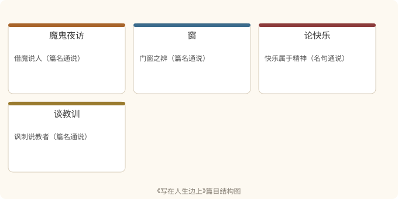

写在人生边上
一、基本信息
| 作者 | 钱锺书 |
|---|---|
| 成书/出版 | 1941年出版（通说待核；开明书店说） Qian Zhongshu — Encyclopaedia Britannica（百科全书） |
| 国别/地区 | 中国 |
| 时代 | 现当代 · 现代 |
| 体裁 | 散文集 |
| 语言 | 汉语（白话·文言点缀） |

《写在人生边上》篇目结构图（主题·结构图）
二、创作背景
Britannica（Qian Zhongshu 条）确认其为学者型作家（与《围城》并列的本库作者——见 weicheng 条 B082 核对记录）。
书名自序：人生是一部大书，本书文字是写在书边空白上的零星批注（自述意，通说待核）。
三、内容脉络
十篇随笔：《魔鬼夜访钱锺书先生》《窗》《论快乐》《说笑》《谈教训》《一个偏见》《释文盲》《论文人》等（篇目通说待核）。
以魔鬼夜访开篇——借魔口说人事（通说）。
《论快乐》：快乐在过程而非目的——『一切快乐的享受都属于精神的』（名句通说待核）。
四、主要人物表
| 人物 | 身份 | 说明 |
|---|---|---|
| 钱锺书 | 学者·随笔作者 | 以智性反讽观照人生 |
五、主题与艺术特点
- 智性反讽：对人性弱点的显微镜（通说）。
- 中西互证：随笔中随手援引中西典籍（通说）。
- 『写在人生边上』的态度：不写大书，写批注——谦逊而锋利（通说）。
六、影响与评论
- Britannica：钱锺书为中国最重要的学者—作家之一（作者级定位，见 B082 weicheng 条核对）。
Qian Zhongshu — Encyclopaedia Britannica（百科全书） - 《写在人生边上》与《围城》并列为钱锺书散文与小说双峰（通说）。
Qian Zhongshu — Encyclopaedia Britannica（百科全书）
七、阅读建议
难点
- 中西典故密集——注释与耐心。
- 反讽语气的识别。
- 《写在人生边上》（辽宁人民出版社/三联书店版本，通说待核）。
可与《围城》互读；先读《论快乐》《窗》。
八、待核实
- 1941年初版细节待核。
- 篇目逐篇核对（十篇说）。
- 《论快乐》名句原文逐字核对。